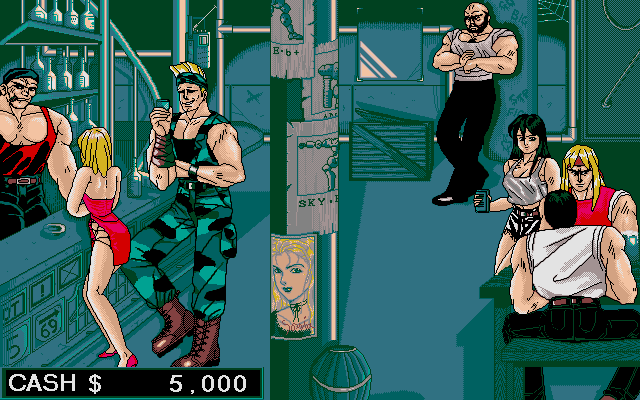
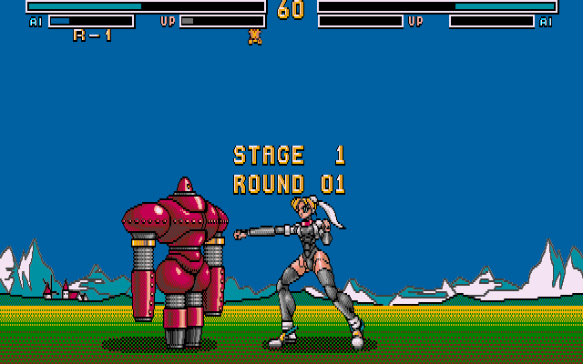

名稱：機甲之夢 (Metal & Lace: The Battle of the Robo Babes，中文版)
簡介：日本Forest 1992年出品的18禁格鬥遊戲，1993年由MegaTech移植至DOS，台灣由微波
中文化並代理發行 [待補]。


備註：本版為無碼中英文磁片版
保護：磁片版為數字密碼，光碟版為光碟+數字密碼，數字密碼破解碼：
MAIN.EXE
(中文版)
75 0D E8 7A 29 (不用輸入密碼)
EB -- -- -- --
或
0B C0 74 34 68 AE 05 (密碼隨便輸入)
-- -- EB 46 -- -- --
或
(英文光碟版)
75 0D E8 B9 39 (不用輸入密碼)
EB -- -- -- --
備註：執行ML.BAT時，加上參數E為英文模式，否則為中文模式。
檔案：UnCensor.rar = 無碼更新磁片
metalace-old.rar = 微波原始有碼版
操作：按下吧台下方的69標示開始遊戲（會要求輸入密碼）。
說明：必須有裝甲（機甲）才能進行戰鬥。